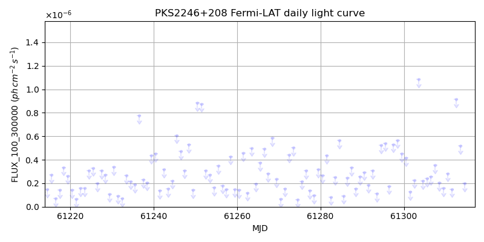
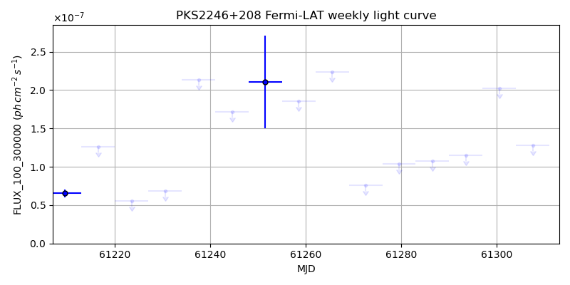
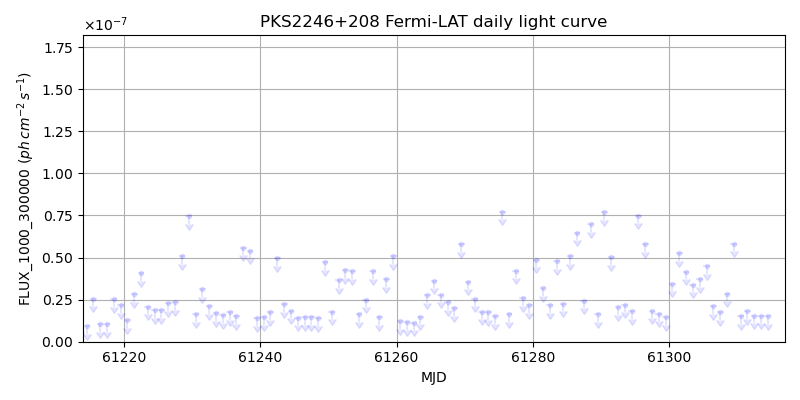
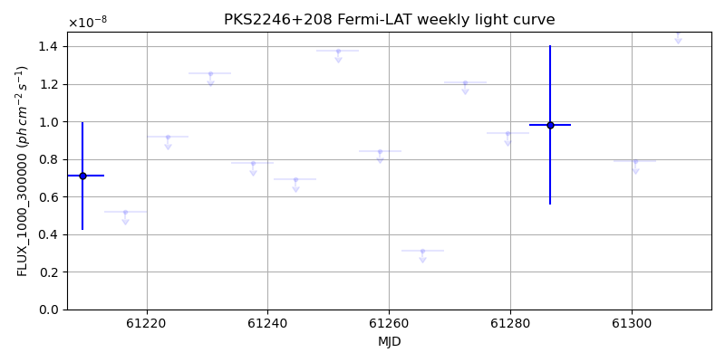

LAT Lightcurve site: https://fermi.gsfc.nasa.gov/ssc/data/access/lat/msl_lc/source/PKS_2246p208
NED: Query
Time of last update of this page: UT: 2026-10-02 15:30 (MJD: 61315.646)
| Property | Value |
|---|---|
| R.A. | 22:49:00.48 |
| Dec. | 21:07:01.2 |
| z | 1.279 |
| 3FGL SpectrumType | |
| 3FGL PL Index | -1.00 |
| 3FGL Flux_100_300000 | -1.00e+00 |
| 3FGL Flux_1000_300000 | -1.00e+00 |
| 3FGL Flux >200 GeV | -1.00e+00 |
| 3FGL Extrap. Crab >200 GeV | -1.00 |
| 3FGL Flux After EBL Absorption >200GeV | -1.00e+00 |
| 3FGL EBL Crab Fraction >200GeV | -1.00 |

| MJD | dMJD | Flux | dFlux | Frac3FGL | FracCrab>200GeV | EBLFracCrab>200GeV |
|---|---|---|---|---|---|---|
| 61310.50 | 0.50 | 2.83e-07 | 0.00e+00 | 0.00 | 0.00 | -0.00 |
| 61311.50 | 0.50 | 1.50e-07 | 0.00e+00 | 0.00 | 0.00 | -0.00 |
| 61312.50 | 0.50 | 9.15e-07 | 0.00e+00 | 0.00 | 0.00 | -0.00 |
| 61313.50 | 0.50 | 5.17e-07 | 0.00e+00 | 0.00 | 0.00 | -0.00 |
| 61314.50 | 0.50 | 1.97e-07 | 0.00e+00 | 0.00 | 0.00 | -0.00 |

| MJD | dMJD | Flux | dFlux | Frac3FGL | FracCrab>200GeV | EBLFracCrab>200GeV |
|---|---|---|---|---|---|---|
| 61279.50 | 3.50 | 1.03e-07 | 0.00e+00 | 0.00 | 0.00 | -0.00 |
| 61286.50 | 3.50 | 1.07e-07 | 0.00e+00 | 0.00 | 0.00 | -0.00 |
| 61293.50 | 3.50 | 1.15e-07 | 0.00e+00 | 0.00 | 0.00 | -0.00 |
| 61300.50 | 3.50 | 2.02e-07 | 0.00e+00 | 0.00 | 0.00 | -0.00 |
| 61307.50 | 3.50 | 1.28e-07 | 0.00e+00 | 0.00 | 0.00 | -0.00 |

| MJD | dMJD | Flux | dFlux | Frac3FGL | FracCrab>200GeV | EBLFracCrab>200GeV |
|---|---|---|---|---|---|---|
| 61310.50 | 0.50 | 1.53e-08 | 0.00e+00 | 0.00 | 0.00 | -0.00 |
| 61311.50 | 0.50 | 1.83e-08 | 0.00e+00 | 0.00 | 0.00 | -0.00 |
| 61312.50 | 0.50 | 1.55e-08 | 0.00e+00 | 0.00 | 0.00 | -0.00 |
| 61313.50 | 0.50 | 1.56e-08 | 0.00e+00 | 0.00 | 0.00 | -0.00 |
| 61314.50 | 0.50 | 1.51e-08 | 0.00e+00 | 0.00 | 0.00 | -0.00 |

| MJD | dMJD | Flux | dFlux | Frac3FGL | FracCrab>200GeV | EBLFracCrab>200GeV |
|---|---|---|---|---|---|---|
| 61279.50 | 3.50 | 9.35e-09 | 0.00e+00 | 0.00 | 0.00 | -0.00 |
| 61286.50 | 3.50 | 9.82e-09 | 0.00e+00 | 0.00 | 0.00 | -0.00 |
| 61293.50 | 3.50 | 2.22e-08 | 0.00e+00 | 0.00 | 0.00 | -0.00 |
| 61300.50 | 3.50 | 7.86e-09 | 0.00e+00 | 0.00 | 0.00 | -0.00 |
| 61307.50 | 3.50 | 1.48e-08 | 0.00e+00 | 0.00 | 0.00 | -0.00 |
--------------------------------------------------------- Using user-supplied coords: 22:49:00.48 21:07:01.2 2000 --------------------------------------------------------- FLWO UT night of: 2026-10-03 Local Sid. @ Midnight: 00:24 Sunset (-15.0) (local, UT): 19:14 02:14 Sunrise (-15.0) (local, UT): 05:12 12:12 Moonrise (local, UT): 22:48 05:48 Moonset (local, UT): Moon phase: 0.53 --------------------------------------------------------- AzTime LSID UT Obj_el Obj_az Mn_el Mn_az Sep. --------------------------------------------------------- 19:14 19:37 02:14 45.9 91.4 -28.5 20.1 98.5 19:44 20:07 02:44 52.3 95.8 -26.2 26.7 98.8 20:14 20:37 03:14 58.6 101.2 -23.2 32.8 99.2 20:44 21:07 03:44 64.8 108.1 -19.6 38.5 99.5 21:14 21:37 04:14 70.7 118.2 -15.7 43.6 99.8 21:44 22:07 04:44 75.9 135.0 -11.3 48.4 100.1 22:14 22:37 05:14 79.2 164.1 -6.5 52.7 100.4 22:44 23:07 05:44 78.9 201.6 -0.8 56.7 100.7 23:14 23:37 06:14 75.1 228.5 3.8 60.4 101.0 23:44 00:07 06:44 69.8 243.7 9.1 63.9 101.2 00:14 00:38 07:14 63.8 253.2 14.6 67.1 101.5 00:44 01:08 07:44 57.6 259.8 20.3 70.2 101.7 01:14 01:38 08:14 51.3 264.9 26.1 73.1 101.9 01:44 02:08 08:44 44.9 269.3 32.1 76.0 102.1 02:14 02:38 09:14 38.5 273.1 38.1 78.8 102.3 02:44 03:08 09:44 32.1 276.7 44.2 81.7 102.5 03:14 03:38 10:14 25.8 280.1 50.3 84.8 102.7 03:44 04:08 10:44 19.5 283.5 56.5 88.1 102.9 04:14 04:38 11:14 13.4 287.0 62.7 91.9 103.1 04:44 05:08 11:44 7.4 290.5 68.9 96.9 103.3 05:12 05:37 12:12 1.9 294.1 74.7 103.8 103.4 --------------------------------------------------------- Dark hours >55 deg.: 2.86 srcstart (UT): 2026-10-03 02:56 srcend (UT): 2026-10-03 05:48